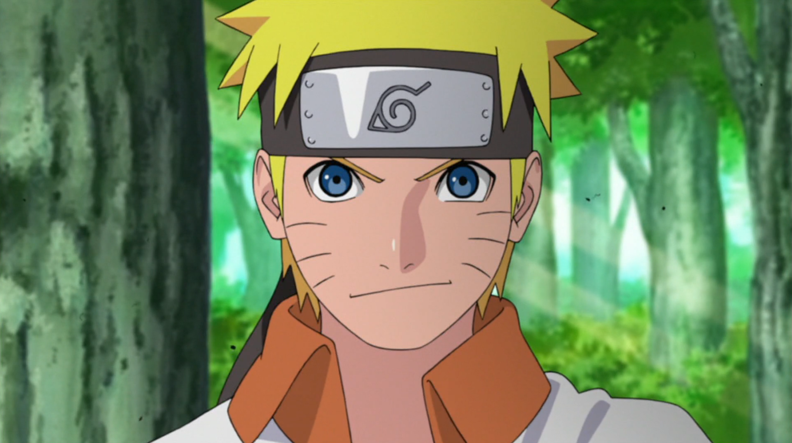

| Característica Aparência | Habilidades | Curiosiades |
|---|---|---|
| Cabelo loiro espetado | Grande reserva de chakra | O criador Masashi Kishimoto inicialmente pensou em fazer Naruto como um rapaz que usava magia culinária, não como ninja |
| Olhos azuis | Usa técnicas como o Rasengan | O prato favorito dele é o lámen do restaurante Ichiraku Ramen. Essa paixão virou uma das marcas registradas do personagem. |
| Geralmente usa roupa laranja (clássico no início da série) | Capaz de criar clones com o Kage Bunshin no Jutsu | O laranja foi escolhido para destacar Naruto visualmente e mostrar sua personalidade energética e chamativa. |
| Altura/porte: Baixo e magro no início | Possui o poder da Kurama (raposa de nove caudas) | No Japão, Naruto é dublado por uma mulher: Junko Takeuchi. |